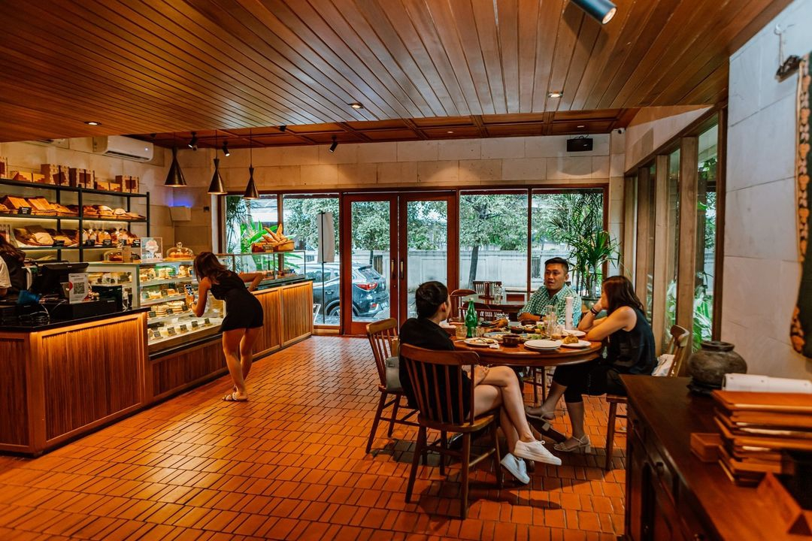

Warung Kopi Favorit saya

Suasana warung kopi ini sangat nyaman dan hangat seperti caffe. Dengan dekorasi kayu dan lampu remang-remang, tempat ini cocok untuk bersantai, ngobrol, atau kerja santai.
Kopinya enak, baristanya ramah, dan tempatnya cocok dijadikan story ig.
Daftar Menu
- Kopi Hitam - Minuman - Rp20.000
- Cappuccino - Minuman - Rp35.000
- Espresso - Minuman - Rp20.000
- Roti Bakar - Makanan - Rp20.000
- Mie Goreng - Makanan - Rp20.000
Tabel Menu dan Harga
| Menu |
Kategori |
Harga |
| Kopi Hitam |
Minuman |
Rp20.000 |
| Cappuccino |
Minuman |
Rp35.000 |
| Espresso |
Minuman |
Rp20.000 |
| Roti Bakar |
Makanan |
Rp20.000 |
| Mie Goreng |
Makanan |
Rp20.000 |
Formulir Pemesanan
WEB BY M.ISKANDAR